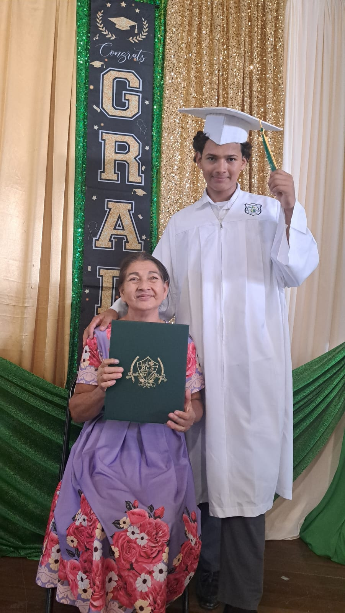

About Me
 Hey, I’m Elan Moore! I’m 16 and always exploring new passions. I’m really into computers and tech, but I also love getting outside and experiencing nature—whether it’s hiking, exploring the wilderness, or just being out in the open air. I’ve got a mix of interests that keeps life exciting, and I’m always looking for new adventures and ways to grow.